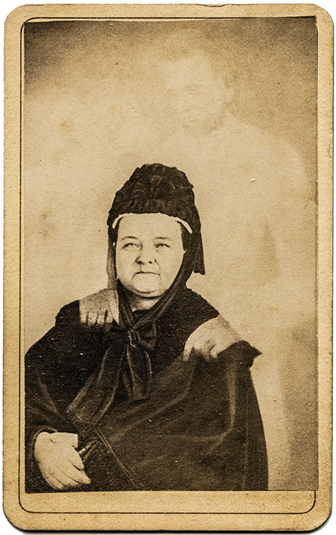
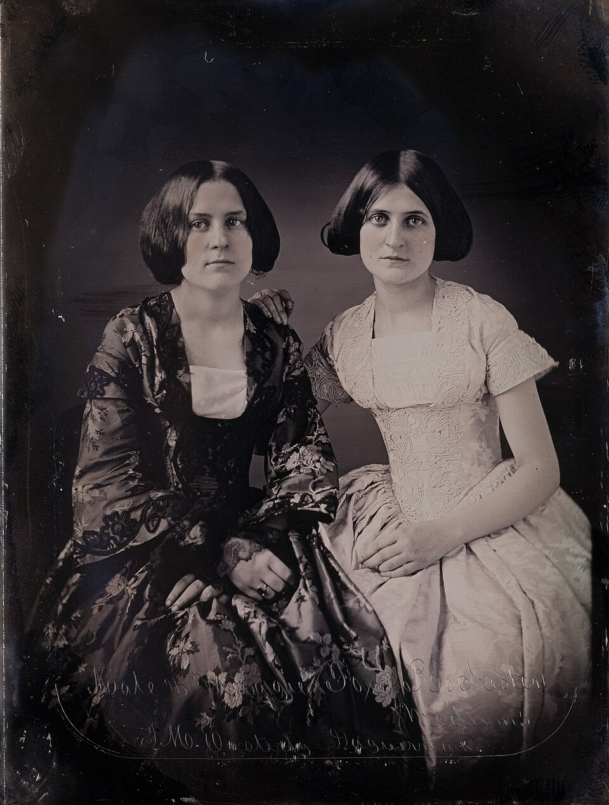
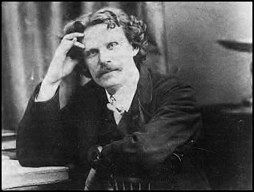
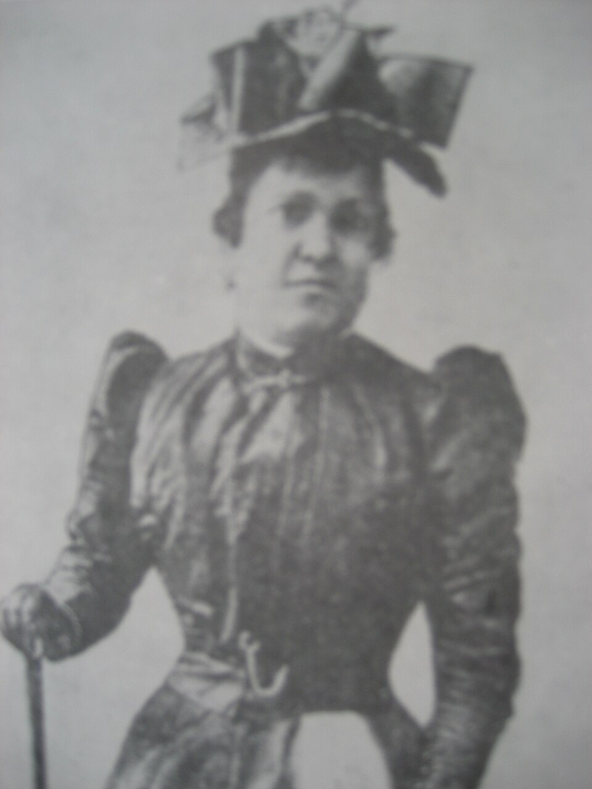
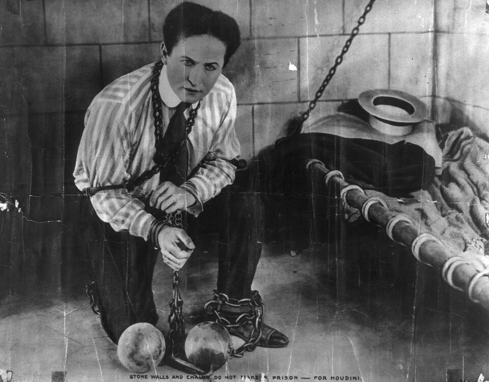

“There are more things in heaven and earth, Horatio, than are dreamt of in your philosophy.”Hamlet, I.v
On the evening of the 31st of March, 1848, in a small wooden farmhouse at Hydesville, New York, two sisters — Margaret Fox, aged fourteen, and Kate, aged eleven — called their parents into the bedroom to demonstrate something strange. They had been hearing knockings for several nights. That evening, Kate, in an experimental mood, addressed the unseen presence directly. “Mr. Splitfoot,” she called — using a folk name for the Devil — “do as I do.” She clapped her hands twice. From the wall, with no visible source, came two knocks in reply. Their mother, terrified, called in the neighbours. Over the next hour, in front of witnesses, the knockings answered yes-and-no questions, gave the ages of the children present, and named a peddler who, the rappings claimed, had been murdered and buried beneath the house years before. The room filled, and word spread, and within a year the Fox sisters were on the lecture circuit, and within a decade what came to be called Spiritualism was a movement of perhaps a million Americans and as many Europeans, with newspapers, churches, hymnbooks, and the earnest belief of editors, generals, and statesmen.1
The Hydesville rappings were a fraud. Forty years later, in October 1888, Margaret Fox stood on the stage of the New York Academy of Music and confessed it to a packed house. She removed her shoe and demonstrated how, as a girl, she had learned to crack the joints of her toes against the wooden floor to produce loud, locatable knocks. She had done it for the first time, she said, to scare her superstitious mother as a prank. The prank had got out of hand. By the time the two sisters understood that the great movement was built on the noise of their feet, it was already too late to stop. The recantation, the press largely buried; the movement continued for decades after.2
That is the puzzle this chapter is about. A fraud told by two children in a farmhouse turned, in less than a generation, into a religion with millions of adherents. Among those adherents were the most famous physicist of the age, the inventor of telephone-line repeaters, the author of Sherlock Holmes, and a President’s grieving widow. None of them were stupid. None of them were uneducated. They saw something, in a darkened room, that they took to be the proof of a world beyond death. The question this chapter has to answer is not whether ghosts are real. The question is what the long history of believing in them — sincerely, in good faith, often by intelligent people — tells us about the mind that does the believing.
The question is not whether ghosts are real. The question is what the long history of believing in them — sincerely, by intelligent people, in well-lit drawing rooms — tells us about the mind that does the believing.
The Founding StoryThe Two Sisters Who Started It All

The Fox sisters were not, by any standard reading of the historical record, especially extraordinary children. Their gift — the toe-cracking trick — was a small piece of bodily virtuosity that, in another century, might have made them gymnasts or pianists. In 1848, in upstate New York, on the burned-over district of revivals and utopias, it made them the centre of a religious mass-event the like of which Western civilisation had not seen in a century. Their elder sister Leah, a music teacher already in her thirties when the rappings began, swiftly turned the phenomenon into a paying enterprise. Within months the three of them were giving séances in Rochester at fifty cents a head — an enormous sum — to audiences that included senators and judges. The newspapers published transcripts of the spirits’ messages. Editorials debated the meaning. Investigative committees were formed and concluded, sometimes, that the phenomena were “genuine.”
What the historian needs to explain is not the deception — that is small — but its reception. Why did Americans of 1848 want this so badly, and why did they want it almost as badly in 1860, 1880, 1900, after every public denunciation? The historians who have looked closest — Ann Braude, Robert Cox, Bret Carroll — agree on much of the answer. Spiritualism arrived precisely at the moment when the old religious certainties of revealed Christianity were weakening under the pressure of Darwin, geology, biblical criticism, and an industrial society in which the dead could no longer be relied upon to lie close by. The middle class of the nineteenth century lived in long mourning — child mortality was high, the American Civil War had killed three quarters of a million young men, and the technologies of grief had not yet been invented — and Spiritualism offered, in the language of contemporary science, a continuation. The dead were not gone. They were merely in another room, and could be talked to. To a mother who had buried two children, this was not a crackpot belief. It was a lifeline.3
Hold this in your mind as we go on, because it is the deep psychological constant of every chapter in this volume. The credulity of intelligent people is almost always not foolishness but bereavement — for the dead, for certainty, for a god, for a meaningful universe — and the believing is not a failure of intellect but a refusal of unbearable loss.
The Camera as WitnessHow the Ghost Got Into the Plate
Photography arrived in 1839. Within a generation it had become, in popular understanding, a technology of objective record — the camera, unlike the eye, did not lie. So when an obscure Boston engraver named William H. Mumler announced, in 1862, that his photographic plates were spontaneously capturing the spirits of the dead behind his sitters, the claim landed in a culture that already half believed cameras saw more than people did. Within a year Mumler was the most famous spirit photographer in America. Bereaved Spiritualists paid up to ten dollars — a labourer’s weekly wage — to sit for him, in the hope that a beloved figure would appear on the plate. Many did appear, and were recognised, and many sitters wept.4
Mumler’s most famous customer was Mary Todd Lincoln — widow of the assassinated President, mother of three sons in their graves, by the late 1860s a woman undone by grief and possibly by what we would now call psychiatric illness. She visited Mumler under an assumed name and was photographed. The plate, our frontispiece, showed Abraham Lincoln behind her, his hands resting on her shoulders. She received it as the proof she had been seeking that her husband and her children were not lost. She kept the picture by her bed for the rest of her life.
How did Mumler do it? He had several techniques. The simplest was double exposure: the plate was first lightly exposed to an image of the “ghost,” then the sitter was photographed over it in a brighter exposure; the older image, ghostly because under-exposed, swam into the picture as a translucent figure. A second was combination printing — printing two negatives together. A third, when Mumler was caught short of suitable ghosts, was the macabre expedient of using portraits of other living people of his acquaintance and hoping no one would recognise them. (He was caught when his “ghosts” turned out to be photographs of Boston citizens still walking around.) Brought to trial in New York in 1869 for fraud, he was acquitted: the prosecution failed to prove how, exactly, he had done it, in part because P. T. Barnum — testifying for the prosecution — produced spirit photographs of his own, demonstrating that the trick could be done by anyone with patience, but stopped short of explaining Mumler’s specific cases. The acquittal in 1869 ended the criminal pursuit and did almost nothing to slow the trade. Spirit photography flourished for a further sixty years.5
The full history of spirit photography, told carefully, contains four moments that have a recurring shape and are worth listing here, because the same four steps repeat in every variant of paranormal claim we will meet in this volume:
- A real technical or psychological mechanism is discovered (double exposure; the ideomotor effect; sleep paralysis; the human capacity for trance) and produces a striking phenomenon.
- The phenomenon is presented as proof of a paranormal claim, usually by someone who knows perfectly well it is not.
- Intelligent, grieving, or hopeful people accept it — not from credulity but from need.
- The fraud is exposed, repeatedly, in detail — and the belief survives the exposure, because the belief was never resting on the evidence in the first place.
That last fact is the one we have to keep returning to. Disconfirming evidence is largely powerless against beliefs that meet a deep emotional need. Spirit photography continued through Mumler’s acquittal, through the trials of his successors, through the Cottingley fairy hoax (in which two girls in 1917 photographed paper cutouts of fairies and convinced Sir Arthur Conan Doyle — the creator of Sherlock Holmes — that the photographs were genuine), and into the present age of phone-camera “orbs” and night-vision ghost-hunting television. The technology has changed. The four steps have not.
The MediumsThe People Through Whom the Dead Spoke
Spirit photography was one branch of the great Victorian industry of contact with the dead. The other, larger branch was the mediums — men and women who, in the presence of a paying group in a darkened room, claimed to channel the voices, the words, sometimes the physical actions of the deceased. The greatest mediums of the nineteenth century were celebrities: Queen Victoria summoned one; the Royal Society investigated another; the President of the United States held séances in the White House.


The two most studied figures stand at opposite ends of the spectrum and bracket what is honestly known. Daniel Dunglas Home — pronounced “Hume” — was a Scottish-born medium who worked in the elite drawing rooms of Britain, France, and Russia for two decades and is the historical anomaly. He gave séances in light (most mediums insisted on darkness); he was investigated by sceptical scientists, including the eminent chemist William Crookes; he produced phenomena — tables rising, accordions playing untouched, his own body floating — that were reported by hundreds of witnesses, including hostile ones, and he was never caught cheating, in a career of thirty-two years. The novelist Robert Browning sat with him, despised him, lampooned him in verse (“Mr. Sludge, the Medium”), and could not explain him. To this day, no clean explanation exists for Home’s greatest reported effects. He may have been the most accomplished stage magician of his age, working without ever revealing his methods. He may have been something stranger. The honest position is that we do not know.6
Eusapia Palladino, the Italian medium of the next generation, bracketed the opposite end. She was caught cheating repeatedly — using her foot to lift tables, freeing her hands during the “control” meant to immobilise her, producing “materialisations” with cheesecloth. And yet, in between, she produced effects under controlled conditions that the investigating scientists — including some who came to expose her — could not explain at the time. She was tested in Naples, in Paris, in Cambridge, at Columbia. The investigators’ reports are a strange document: they catch her in every imaginable cheat, and then say that in some of the sessions, in some of the phenomena, no fraud could be detected. The careful modern reading is that Palladino was a habitual but inconsistent cheat who, when she did cheat, did so in ways periodically too clever for her observers; when she could not cheat, she could not produce. But this remains a reading, not a proof.7
The Magician Who KnewHarry Houdini’s Long War on the Mediums

The clearest-eyed observer of the medium business was, of all people, a stage magician. Harry Houdini — born Ehrich Weiss in Budapest in 1874 — spent the last decade of his life waging a personal war on the séance industry. His motive was partly intellectual and largely personal. After his mother’s death in 1913, the grieving Houdini had visited every medium he could find, hoping to hear her voice once more. None of them, he found, did anything he himself could not duplicate as a stage trick. He attended séance after séance — sometimes in disguise, sometimes with reporters — and demonstrated, point by point, how the “phenomena” were produced: trumpets blown by reachable foot mechanisms, “automatic writing” produced by mediums in unlit rooms, ectoplasm regurgitated from prior swallows of cheesecloth.8
His memoir A Magician Among the Spirits (1924), and his collaboration with the popular-science magazine Scientific American on a major debunking commission, made him the most public sceptic of his age. They cost him, painfully, the friendship of Sir Arthur Conan Doyle, who had become a devout Spiritualist after losing his son in the First World War and could not bear Houdini’s insistence that the mediums Doyle had befriended were thieves. The two men ended their long correspondence in mutual disappointment — Doyle convinced that Houdini himself had paranormal powers he refused to admit, and Houdini convinced that the most rational mind of his generation had been broken by grief.
Houdini’s career carries the central practical lesson of this whole literature. The trained observer of paranormal phenomena who can recognise tricks is not the scientist. It is the magician. Scientists, even very good ones, are trained to assume that nature does not deliberately deceive them; the medium does. A scientist watching for unconscious bias is the wrong instrument for detecting deliberate sleight of hand. Houdini knew the tricks, because he was the one selling them on stage every night. He was the one to whom the séances looked, immediately, like bad stage magic.
The trained observer of paranormal claims is not the scientist. It is the magician. Nature is not trying to fool you. The medium is.
The PsychologyWhy Intelligent People See What Isn’t There
If many mediums cheated, and many spirit photographs were faked, why did so many honest sitters — people whose word we would trust in every other domain — report the experiences they did? The answer is not gullibility. It is a handful of well-mapped psychological mechanisms, every one of which is normal and present in your brain right now.
The visual system is so finely tuned to detect human faces that it produces them from any sufficiently complex texture — wood grain, clouds, the burned bottom of a piece of toast. Show a sitter a faintly fogged photographic plate and ask whether they can see their dead child in it, and they often can. This is not stupidity. It is exactly the same machinery that lets you recognise your loved ones in a crowded street — running, in the right conditions, on too little information.9
About 8 percent of the population experiences, at least once, the terrifying state in which they wake before the muscle-paralysis of REM sleep has lifted. They cannot move; their breathing feels obstructed; they feel a presence in the room; sometimes they hear footsteps, voices, see shapes. Across cultures this experience is interpreted as a witch (Old Hag in Newfoundland), an incubus, an alien abduction, a deceased relative, or a ghost. It is a real bodily state, well documented, and it explains a great share of the modern Western ghost report.10
When several people rest their fingers lightly on a small table in a dim room and concentrate on the same question, the table often begins to move — or so it appears. The mechanism, identified in 1852 by the physiologist William Carpenter and again by Michael Faraday in beautifully controlled experiments the same year, is the ideomotor effect: a person who expects a movement makes it, unconsciously, in microscopic increments, and amplified by the table and the trust of the group it produces an impressive collective phenomenon that no individual sitter can detect themselves producing. Every ouija board on earth works on this mechanism. Sitters routinely insist no one is pushing — and they are sincere. They are not pushing consciously. The hand is going where the expectation already is.11
A medium who knows almost nothing about you can, in five minutes, produce statements that feel uncannily personal. The technique is cold reading: open Barnum statements (“I sense a great loss in your past”), questions disguised as observations, the use of subtle feedback — pupil dilation, breath, nodding — to home in on what lands. The Forer effect, demonstrated by Bertram Forer in 1948, shows that people will rate vague generic personality statements as “highly accurate of me, personally” when told the statements were written specifically for them. Run this on a grieving sitter who desperately wants the statements to fit, and a skilled cold reader can pass for a window to the dead.12
None of these mechanisms are exotic. None require any failure of intellect. They are the ordinary operations of a normally functioning human brain, encountered in the conditions that mediums and ghost-houses and spirit photographers have, in some cases by trial and error and in some cases by design, learned to engineer. To understand them is not to accuse the believer of stupidity. It is to recognise, with some pity and respect, that the believer is being defeated by their own ordinary equipment.
The Objection That Matters“But Are You Saying Every Person Who Has Seen a Ghost Is Wrong?”
Here is the question that comes back from every honest reader of this material, and it deserves an honest answer. I have a friend — a sober, intelligent, sceptical friend — who saw their dead mother at the foot of the bed three nights after her death. They were not asleep. They were not religious. They were not credulous. They saw her, clearly, for several seconds. Are you telling me they imagined it? Are you telling me everyone who has ever had such an experience is the victim of cheap tricks?
No. And the honest answer divides cleanly in two, and we will not blur it.
On one side is the long catalogue of fraud: Mumler’s double exposures, the Fox sisters’ toes, Palladino’s freed hand, the Cottingley fairy cutouts, modern ghost-hunting television. This is most of the visible “evidence” for the supernatural, and a careful magician can show, item by item, exactly what is going on. There is no remaining mystery in any of it. We say so.
On the other side is the equally well-documented catalogue of genuine anomalous experiences in otherwise healthy people — the bereaved who see their dead spouse at the foot of the stairs in the weeks after death, the lone walker who feels a presence behind them in an empty house, the dying patient who reports a deceased relative in the room. These are real experiences. Survey research finds that between one in three and one in two recently bereaved people report a sensory presence of the dead, often felt as comforting; the phenomenon has its own name in the medical literature, post-bereavement hallucinations, and it is associated with normal grieving and not with psychiatric illness.13 Sleep-paralysis visitations, hypnagogic and hypnopompic hallucinations at the edges of sleep, the felt-presence effect in lonely or stressful environments — all of these produce real sensory experiences in healthy people. The experiences are what they feel like. The dispute is only about what is producing them.
The honest scientific position, then, is not “you didn’t see what you saw.” It is: you saw exactly what you say you saw; your nervous system did exactly what nervous systems sometimes do in grief and in shadow; we know a great deal about how it produces such experiences; we have no evidence that the experience requires a deceased agent to be present in the room. The first half of that sentence honours your friend. The second half asks for a particular kind of evidence that, in two centuries of looking, has not been forthcoming.
The Honest RemainderWhat Psychology Cannot Tell You
This volume is committed, in the way we have practised through every chapter, to telling you not only what science has explained but what it cannot. So here, in the clearest list we can give, is the honest residue.
Psychology can explain the experience of a ghost. It can describe sleep paralysis, post-bereavement hallucination, pareidolia, the felt-presence effect, the ideomotor table, the cold reading. It can show, with care, how an honest person comes to report seeing something that no one outside their head was present to be seen.
Psychology cannot prove that nothing is there. The absence of detection is not the detection of absence. To say that we have no good evidence that the spirits of the dead address us in séance is not the same as proving they do not exist. The bar for proving non-existence is, in any honest philosophy of science, vanishingly high. We have not cleared it, and we will not pretend to.
Psychology cannot fully account for the residue. In the long history of paranormal investigation, a small number of cases — D. D. Home is the cleanest — resist easy explanation. We have not caught them. We have not produced an alternative account that fits every witness. Honesty requires noting that the explanations on the table are not yet complete — while also noting that “not yet explained” is a very different statement from “therefore supernatural,” which is the move the believing tradition has made for centuries and the move that science cannot make.
Psychology cannot tell you whether a person you loved survives their death. This is the question every customer of every medium of the last two centuries has been, in their bones, asking. The answer the science honestly returns is: we do not know, and we cannot know with the methods we have. Different people, possessing the same science, will hold the question differently — some with quiet hope, some with quiet acceptance — and this volume will not tell you which to do. That is not a thing science is for.
“What is a ghost?”
Two centuries after Hydesville, the question still produces disagreement among careful people. Six who have spent their lives on it.
“In most cases I can show you exactly how it is done — the foot under the table, the double exposure, the swallowed cheesecloth. The reason you do not see the trick is that you are not looking where the trick is. A ghost, to me, is a piece of bad magic that succeeded because the audience was grieving.”
“A predictable output of a nervous system under particular conditions: low light, sleep paralysis, grief, isolation, expectation. The phenomenology is real. The agent producing it is, in every well-studied case, inside the skull of the person who reports it.”
“I see post-bereavement hallucinations several times a year. They are not symptoms of illness. They are often gifts — a comforting final visit, a sense of being watched over. I never argue people out of them. I help them hold the experience as what it is: the love that remains, taking the shape the mind needed it to take.”
“A ghost is what a society does with its dead when the old ways of mourning no longer work. Spiritualism rose precisely when the church’s afterlife was weakening and the industrial cemetery was replacing the family burial plot. The form the dead take in our houses tells you more about the living than about anyone else.”
“Every culture I have studied has ghosts. The form differs — ancestors, jinn, hungry ghosts, household spirits — but the underlying experience is human and recurrent. To treat ghosts as merely the embarrassment of a backward people is itself a kind of provincialism. They are the dead, as humanity has lived with them.”
“You have explained, brilliantly, why intelligent people could believe wrongly. You have not, on the evidence, explained why I should not believe what I saw. I do not need the table to rise to know that my mother visited me three nights after she died. I needed nothing to rise. I need only refuse to be talked out of the one undeniable thing in my life.”
Myth vs. RealitySetting the Record Straight
The Claim
“The spirits of the dead can communicate with the living, can be photographed by ordinary cameras, can move tables, can speak through gifted mediums in trance — and there is a long history of well-documented cases supporting this.”
What the Evidence Shows
The visible “evidence” is, on careful investigation, almost without exception fraud or known psychological mechanism (pareidolia, sleep paralysis, ideomotor effect, cold reading). Every famous spirit photographer was caught; every famous medium except D. D. Home was caught or confessed. The experiences are real; the supernatural account of them has not been demonstrated. A small residue remains genuinely unexplained — which is not the same as proven supernatural.
The lines worth carrying out of this chapter.
- The credulity of intelligent people is almost always bereavement, not stupidity. Spiritualism rose in a century of mass grief; every customer of every medium was, at some level, asking the same question about a particular dead person they loved.
- The visible evidence is almost without exception fraud or known psychological mechanism — double exposures, the ideomotor effect, sleep paralysis, cold reading, the Forer effect. None of it is exotic.
- Disconfirming evidence is largely powerless against beliefs that meet a deep need. Mumler was acquitted, the Fox sisters confessed, mediums were caught — and the movements went on for generations.
- The right observer for paranormal claims is not the scientist, but the magician. Nature is not trying to fool you. The medium is.
- Honest science explains the experience, not away the experience. Your friend who saw their dead mother saw exactly what they saw. We have very good accounts of how grief, sleep, and shadow produce such experiences. We have no evidence that an external agent needs to be present.
- Science does not know everything, and never claims to. It cannot prove the dead are gone; it can only report that, looked at carefully, the channels by which they were said to return turn out to be the channels of the living mind talking to itself.
If you keep one sentence: the ghost in the plate is, in every case we can investigate, a faint image of the camera’s own trick — and a much sharper image of the human being looking into it.
Research ReferencesSources & Notes
- HistoryBraude, A., Radical Spirits: Spiritualism and Women’s Rights in Nineteenth-Century America (2nd ed., 2001); Weisberg, B., Talking to the Dead: Kate and Maggie Fox and the Rise of Spiritualism (2004).
- HistoryMargaret Fox, public confession at the New York Academy of Music, 21 October 1888 — reported in The New York World; Davenport, R. B., The Death-Blow to Spiritualism (1888).
- HistoryCox, R., Body and Soul: A Sympathetic History of American Spiritualism (2003); Carroll, B. E., Spiritualism in Antebellum America (1997).
- HistoryKaplan, L., The Strange Case of William Mumler, Spirit Photographer (2008).
- ReferenceP. T. Barnum’s testimony in The People v. William H. Mumler, New York, 1869, reproduced in contemporary newspapers including The New York Times.
- DebatedStein, G., The Sorcerer of Kings: The Case of Daniel Dunglas Home (1993); Crookes, W., Researches in the Phenomena of Spiritualism (1874) — contemporary credulous report; balance with later critical reviews.
- DebatedPolidoro, M., Final Séance: The Strange Friendship Between Houdini and Conan Doyle (2001), on Palladino; Society for Psychical Research, Cambridge Sittings (1895).
- ReferenceHoudini, H., A Magician Among the Spirits (1924).
- ScienceLiu, J., Li, J., Feng, L. et al., “Seeing Jesus in toast: Neural and behavioral correlates of face pareidolia,” Cortex (2014).
- ScienceCheyne, J. A., Rueffer, S. D. & Newby-Clark, I. R., “Hypnagogic and hypnopompic hallucinations during sleep paralysis,” Consciousness and Cognition (1999); Sharpless, B. A. & Doghramji, K., Sleep Paralysis: Historical, Psychological, and Medical Perspectives (2015).
- ScienceCarpenter, W. B., “On the influence of suggestion in modifying and directing muscular movement, independently of volition,” Proceedings of the Royal Institution (1852); Faraday, M., experimental demonstration on table-turning, The Athenaeum (1853).
- ScienceForer, B. R., “The fallacy of personal validation: A classroom demonstration of gullibility,” Journal of Abnormal and Social Psychology (1949); Hyman, R., “Cold reading,” The Zetetic (1977).
- ScienceRees, W. D., “The hallucinations of widowhood,” British Medical Journal (1971); Castelnovo, A. et al., “Post-bereavement hallucinatory experiences: A critical overview,” Journal of Affective Disorders (2015).
Citations support the science presented; a production edition would carry full bibliographic detail and DOIs, externally verified.
Going FurtherRecommended Books & Viewing
Read
- Deborah Blum, Ghost Hunters: William James and the Search for Scientific Proof of Life After Death (2006)
- Mary Roach, Spook: Science Tackles the Afterlife (2005)
- Harry Houdini, A Magician Among the Spirits (1924)
- Massimo Polidoro, Final Séance (2001) — Houdini and Conan Doyle
- Brian A. Sharpless & Karl Doghramji, Sleep Paralysis (2015)
Watch
- James Randi’s investigations — on YouTube and at the JREF archive
- Documentaries on the Cottingley fairies and on the Mumler trial
- Derren Brown’s televised investigations of mediums (with the magician’s eye)